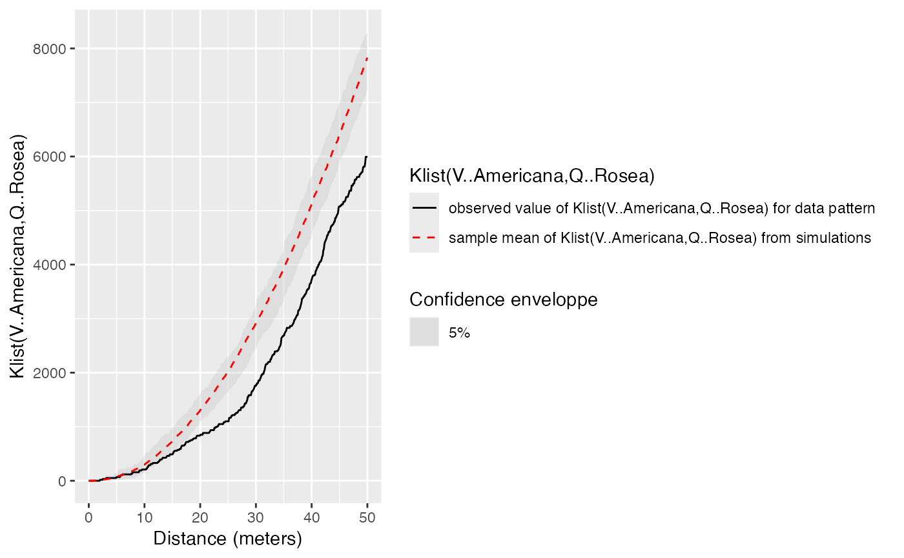
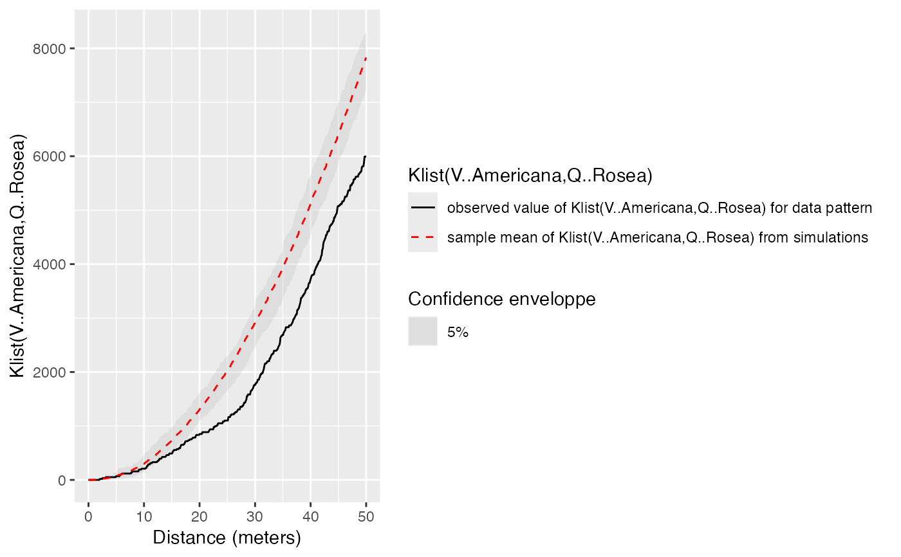

Print a confidence envelope
print.dbmssEnvelope.RdPrints useful information of a confidence envelope of class "dbmssEnvelope"
Usage
# S3 method for dbmssEnvelope
print(x, ...)Details
"dbmssEnvelope" objects are similar to envelope objects. The way they are printed is different to take into account the possibility of building global envelope following Duranton and Overman (2005): the global envelope is calculated by iteration: the simulations reaching one of the upper or lower values at any distance are eliminated at each step. The process is repeated until Alpha / Number of simulations simulations are dropped. The remaining upper and lower bounds at all distances constitute the global envelope. Interpolation is used if the exact ratio cannot be reached.
References
Duranton, G. and Overman, H. G. (2005). Testing for Localisation Using Micro-Geographic Data. Review of Economic Studies 72(4): 1077-1106
Examples
data(paracou16)
autoplot(paracou16)
 # Calculate intertype K envelope
Envelope <- KEnvelope(paracou16, NumberOfSimulations = 20, Global = TRUE,
ReferenceType = "V. Americana", NeighborType = "Q. Rosea")
#> Generating 20 simulations by evaluating expression ...
#> 1, 2, 3, 4, 5, 6, 7, 8, 9, 10, 11, 12, 13, 14, 15, 16, 17, 18, 19, 20.
#>
#> Done.
autoplot(Envelope)

# print
print(Envelope)
#> Global critical envelopes obtained from 20 simulations of "K"["V..Americana", "Q..Rosea"](r) under the null hypothesis: Random Position
#> (All 20 simulated function values are stored in attr(, “simfuns” ) )
#> Significance level of Monte Carlo test: 0.05
#> Data: X
#> ................................................................................
#> Math.label
#> r r
#> obs {hat(K)[list(V..Americana,Q..Rosea)]^{obs}}(r)
#> mmean {bar(K)[list(V..Americana,Q..Rosea)]}(r)
#> lo {hat(K)[list(V..Americana,Q..Rosea)]^{lo}}(r)
#> hi {hat(K)[list(V..Americana,Q..Rosea)]^{hi}}(r)
#> Description
#> r distance argument r
#> obs observed value of "K"["V..Americana","Q..Rosea"](r) for data pattern
#> mmean sample mean of "K"["V..Americana","Q..Rosea"](r) from simulations
#> lo lower global envelope of "K"["V..Americana","Q..Rosea"](r) from [..]
#> hi upper global envelope of "K"["V..Americana","Q..Rosea"](r) from [..]
#> ................................................................................
#> Default plot formula: .~r
#> where “.” stands for ‘obs’, ‘mmean’, ‘hi’, ‘lo’
#> Columns ‘lo’ and ‘hi’ will be plotted as shading (by default)
#> Recommended range of argument r: [0, 50]
#> Available range of argument r: [0, 50]
#> Unit of length: 1 meter
# Calculate intertype K envelope
Envelope <- KEnvelope(paracou16, NumberOfSimulations = 20, Global = TRUE,
ReferenceType = "V. Americana", NeighborType = "Q. Rosea")
#> Generating 20 simulations by evaluating expression ...
#> 1, 2, 3, 4, 5, 6, 7, 8, 9, 10, 11, 12, 13, 14, 15, 16, 17, 18, 19, 20.
#>
#> Done.
autoplot(Envelope)

# print
print(Envelope)
#> Global critical envelopes obtained from 20 simulations of "K"["V..Americana", "Q..Rosea"](r) under the null hypothesis: Random Position
#> (All 20 simulated function values are stored in attr(, “simfuns” ) )
#> Significance level of Monte Carlo test: 0.05
#> Data: X
#> ................................................................................
#> Math.label
#> r r
#> obs {hat(K)[list(V..Americana,Q..Rosea)]^{obs}}(r)
#> mmean {bar(K)[list(V..Americana,Q..Rosea)]}(r)
#> lo {hat(K)[list(V..Americana,Q..Rosea)]^{lo}}(r)
#> hi {hat(K)[list(V..Americana,Q..Rosea)]^{hi}}(r)
#> Description
#> r distance argument r
#> obs observed value of "K"["V..Americana","Q..Rosea"](r) for data pattern
#> mmean sample mean of "K"["V..Americana","Q..Rosea"](r) from simulations
#> lo lower global envelope of "K"["V..Americana","Q..Rosea"](r) from [..]
#> hi upper global envelope of "K"["V..Americana","Q..Rosea"](r) from [..]
#> ................................................................................
#> Default plot formula: .~r
#> where “.” stands for ‘obs’, ‘mmean’, ‘hi’, ‘lo’
#> Columns ‘lo’ and ‘hi’ will be plotted as shading (by default)
#> Recommended range of argument r: [0, 50]
#> Available range of argument r: [0, 50]
#> Unit of length: 1 meter